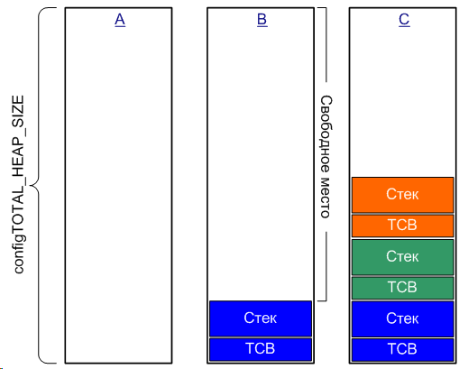
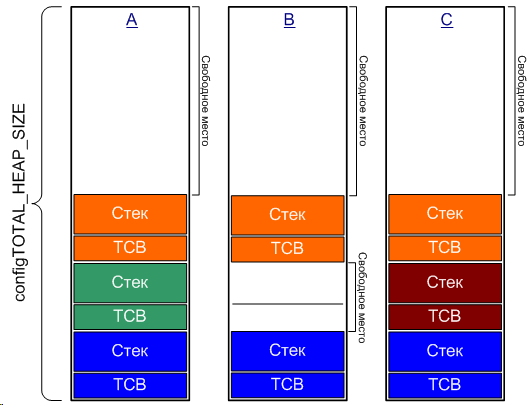

5.1. Введение
Ядро FreeRTOS динамически выделяет RAM всякий раз, когда создается задача, очередь или семафор. Могут использоваться стандартные библиотечные функции malloc() и free(), но могут произойти одна или несколько следующих проблем:
1. Функции malloc() и free() не всегда доступны в малых встраиваемых системах.
2. Их реализации могут быть относительно велики, что займет ценное место, которое можно было бы использовать для кода приложения.
3. Они редко бывают защищенными для использования с потоками (no thread-safe).
4. Они не детерминированы (deterministic). Время выполнения этих функций может отличаться от одного вызова к другому.
5. Они могут привести к фрагментации памяти.
6. Они могут усложнить конфигурацию линкера.
Разные встроенные системы имеют разные требования выделению RAM и характеристикам времени, поэтому один алгоритм выделения RAM подойдет только к некоторому подмножеству приложений. Поэтому FreeRTOS рассматривает выделение памяти как часть слоя переносимости (в противоположность к базовому коду ядра). Это позволяет отдельным приложениям предоставить свою собственную подходящую специфическую реализацию.
Когда ядру требуется RAM, оно вместо вызова напрямую malloc() вызывает функцию pvPortMalloc(). Когда RAM освобождается, оно вместо вызова free() вызывает vPortFree(). Функция pvPortMalloc() имеет тот же самый прототип, как и malloc(), и vPortFree() имеет такой же прототип, как и free().
FreeRTOS поставляется с тремя реализациями примеров для pvPortMalloc() и vPortFree(), все они документированы в этой части. Пользователи FreeRTOS могут использовать одну из этих реализаций, или предоставить свою собственную.
Эти три примера заданы в файлах heap_1.c, heap_2.c и heap_3.c соответственно - все они размещены в папке FreeRTOS\Source\Portable\MemMang. Оригинальная схема пула памяти и выделения блока, используемая в очень ранних версиях FreeRTOS, была удалена, так как она требовала усилий в понимании требуемых размеров блока и пула.
Для встраиваемых систем общим случаем является только создание задач, очередей и семафоров перед запуском шедулера. Когда дело обстоит так, память будет динамически выделена перед тем, как приложение начнет выполнять любую функциональность реального времени, и память, выделенная единожды, никогда не будет снова освобождена. Это означает, что выбранная схема выделения не должна рассматривать ни одну из более сложных проблем, такие как детерминизм и фрагментация, и вместо этого нужно только рассмотреть атрибуты, касающиеся простоты и размера кода.
5.2. Примеры схем выделения памяти
Heap_1.c
Модуль Heap_1.c реализует самую минимальную по возможностям версию pvPortMalloc(), и не реализует vPortFree(). Любые приложения, которые не удаляют задачи, очереди или семафоры, могут потенциально использовать heap_1. Heap_1 всегда является детерминированным. Другими словами, память для нужд FreeRTOS распределяется только один раз, в самом начале - при инициализации, и далее во время работы схема распределения памяти не изменяется.
Схема выделения просто подразделяет обычный массив на блоки меньшего размера в качестве вызова pvPortMalloc(). Массив представляет из себя кучу (heap) FreeRTOS.
Общий объем массива (в байтах) устанавливается определением configTOTAL_HEAP_SIZE в файле FreeRTOSConfig.h. Задание большого массива таким способом может привести к тому, что приложение заберет себе некоторое количество RAM - даже до того, как любой массив будет создан.
Каждая создаваемая задача требует блок управления задачей (task control block, TCB) и стек, выделенные из кучи. Рисунок 42 демонстрирует, как heap_1 подразделяет обычный массив кучи в процессе создания задач.
· A показывает массив кучи до создания любой из задач, весь массив свободен.
· B показывает массив кучи после того, как была создана одна задача.
· C показывает массив кучи после того, как были созданы три задачи.

Рис. 42. RAM, выделяемая в массиве heap при каждом создании задачи
Heap_2.c
Модуль Heap_2.c также использует обычный массив в качестве кучи, размером configTOTAL_HEAP_SIZE. Используется улучшенный алгоритм выделения памяти, и в отличие от heap_1 теперь можно освобождать память. Массив кучи также выделяется статически, так что для приложения останется памяти меньше даже до того, как приложение выделит какой-нибудь собственный массив.
Улучшенный алгоритм выделения памяти гарантирует, что pvPortMalloc() использует свободный блок памяти, который ближе всего по размеру к требуемому количеству памяти. Рассмотрим для примера сценарий, где:
1. Куча содержит три блока свободной памяти по 5, 25 и 100 байт соответственно.
2. Функция pvPortMalloc() была вызвана для выделения 20 байт RAM
Самый маленький подходящий блок свободной памяти RAM 25 байт, поэтому pvPortMalloc() делит 25-байтовый блок на один блок размером 20 байт и один блок размером 5 байт, после чего вернет указатель на 20-байтовый блок. Новый 5-байтовый блок свободной памяти останется доступным для будущего использования при вызовах pvPortMalloc().
Примечание: это чрезмерное упрощение, потому что heap_2 сохраняет информацию о размерах блоков также в области кучи, так что сумма двух разделенных блоков окажется меньше, чем 25 байт.
Heap_2.c не комбинирует смежные блоки свободной памяти в один блок бОльшего размера, чтобы избавиться от фрагментации - однако фрагментация не будет проблемой, если блоки будут выделены и впоследствии освобождены с тем же размером. Heap_2.c подходит для приложений, которые постоянно создают и удаляют задачи, при этом не изменяя размера стека для создаваемых задач.

Рис. 43. RAM, выделяемая из массива, когда задача создается и удаляется
На рисунке показано, как работает улучшенный алгоритм, когда задача создается, удаляется и создается снова.
· A показывает массив кучи после того, как были созданы три задачи. Самый большой блок свободной памяти остается в верхней части кучи.
· B показывает массив кучи после того, как была удалена одна задача. Большой блок свободной памяти остается в верхней части кучи неизменным. Также теперь появляется два свободных блока памяти меньшего размера, в которых раньше размещались стек и TCB удаленной задачи.
· C показывает массив кучи после того, как была после этого создана другая задача. Создание задачи происходит в результате двух вызовов pvPortMalloc(), один из которых выделяет память под новый TCB, а другой выделяет память для стека задачи (вызовы pvPortMalloc() происходят внутри API функции xTaskCreate()).
Каждый TCB имеет точно такой же размер, так что улучшенный алгоритм гарантирует, что блок RAM, который был раннее выделен для TCB удаленной задачи, будет заново использован для TCB новой задачи.
Размер стека, выделенного для новой созданной задачи, идентичен размеру стека ранее удаленной задачи, так что улучшенный алгоритм гарантирует, что блок RAM, который был раннее выделен для стека удаленной задачи, будет заново использован для стека новой задачи.
Большой блок свободной неиспользованной памяти в верхней части кучи остался нетронутым.
Heap_2.c не является детерминированным, однако он является более эффективным чем стандартная реализация библиотечных malloc() и free().
Heap_3.c
Модуль Heap_3.c просто использует стандартные библиотечные функции malloc() и free(), однако делает вызовы этих функций защищенными для использования с потоками путем приостановки работы шедулера. Само собой, никакого детерминизма тут и близко нет. Heap_3.c подходит для общего случая задач, использующих сложную логику создания и удаления задач в процессе работы, и не особо критичных к точности времени выполнения. Реализация показана в листинге 74.
Размер кучи FreeRTOS не зависит от configTOTAL_HEAP_SIZE и вместо этого задается в конфигурации линкера.
void *pvPortMalloc( size_t xWantedSize )
{
void *pvReturn;
vTaskSuspendAll();
{
pvReturn = malloc( xWantedSize );
}
xTaskResumeAll();
return pvReturn;
}
void vPortFree( void *pv )
{
if( pv != NULL )
{
vTaskSuspendAll();
{
free( pv );
}
xTaskResumeAll();
}
}